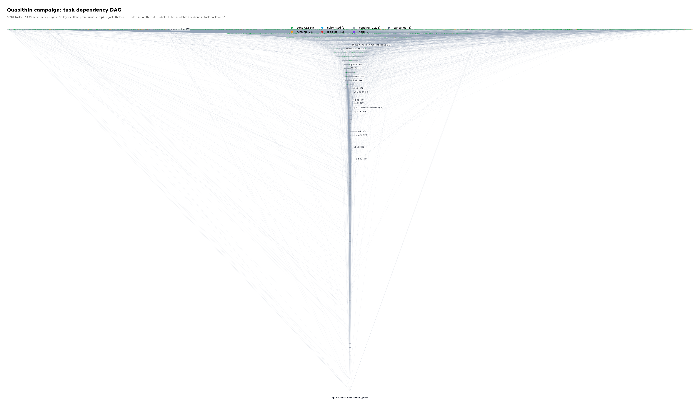
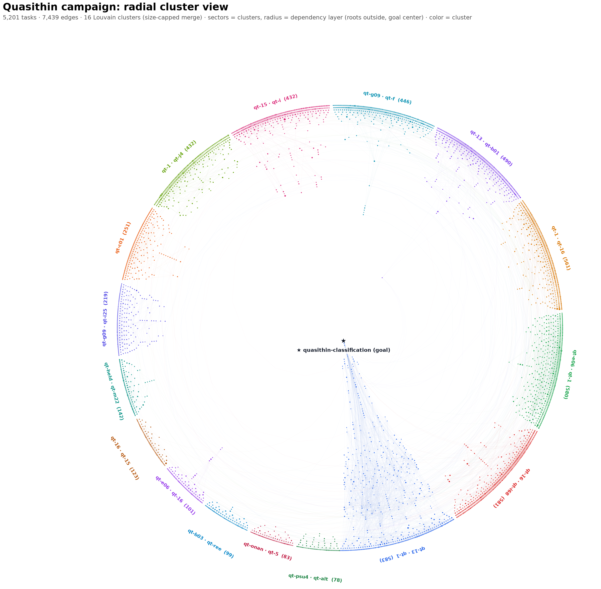

.fleet/tasks.sqlite3 · generated 2026-10-07 10:50
Full task graph: prerequisites at the top, the final goal at the bottom; node color = status, size = attempts. Click to pin a task, browse its dependencies and consumers, and jump between related work.
Open interactive →
16 Louvain clusters arranged as sectors; radius = dependency layer (roots outside, goal at the center); color = cluster, symbol = status. Hover, click, and search like the layered view.
Open interactive →